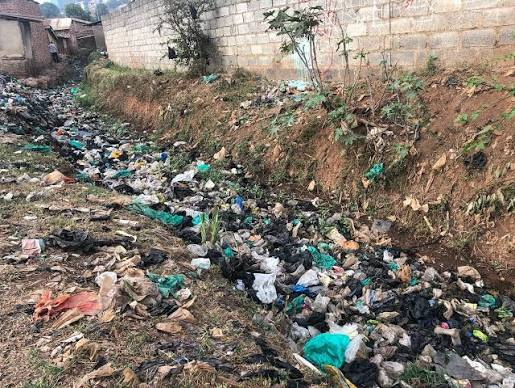
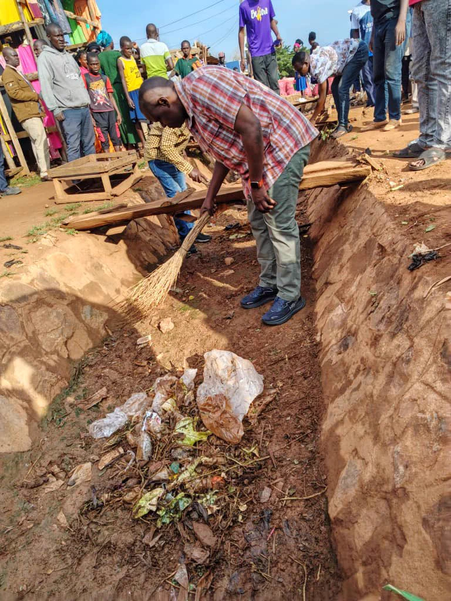
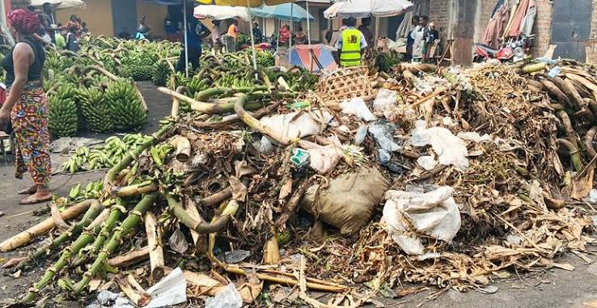
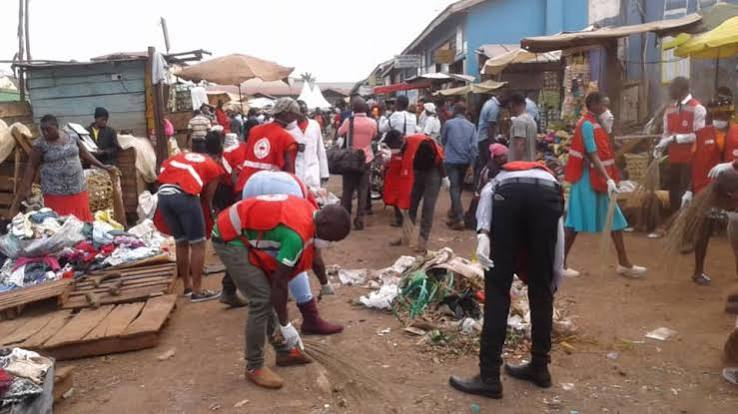

Before
AfterKamwokya Main Drainage Trench
Uncollected polythene bags and household waste blocked rainwater flow, causing flash flooding. Cleared by 25 youth volunteers in partnership with LC1 leaders.
Visual proof of how resident reports and youth clean-up drives restore Kamwokya’s alleys, plots, and markets.

Before
AfterUncollected polythene bags and household waste blocked rainwater flow, causing flash flooding. Cleared by 25 youth volunteers in partnership with LC1 leaders.

Before
AfterOrganic market waste and nighttime dumping created foul odors and mosquito breeding grounds. Replaced with scheduled transfer to nearby KCCA skips.
Explore the Kamwokya Weyonje Hub tools built for residents, youth groups, and LC1 leaders.
Spot waste dumped on a vacant plot or trench? Select your Kamwokya zone and submit a report.
View active red-pin dumpsites and green-pin cleared zones across Kamwokya II Parish.
Skip the 30,000 UGX private fees. Find verified 1,000 UGX KCCA skips and collector contacts.
Join weekend community clean-up drives and track neighborhood sanitation progress.